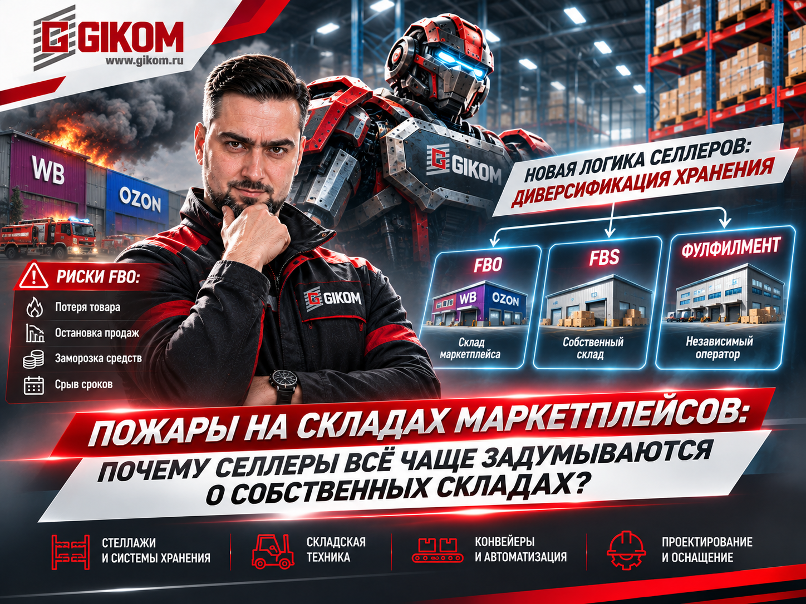

Пожары на складах маркетплейсов: почему селлеры всё чаще задумываются о собственных складах?
Склад маркетплейса долгое время был для продавца удобным решением: передал товар, а хранение, обработку заказов и доставку организует площадка. Но у такой модели есть обратная сторона — зависимость от чужой инфраструктуры.

Пожары и перебои в работе крупных логистических объектов Wildberries и Ozon в очередной раз обратили внимание селлеров на этот риск. Если товар находится на одном складе, проблемы на объекте могут повлиять не только на сохранность запасов, но и на продажи, оборотные средства и выполнение обязательств перед покупателями.
Что меняется в логике продавцов?
Речь не обязательно о полном отказе от FBO в пользу FBS. Гораздо вероятнее развитие гибридной модели, при которой предприниматель распределяет товарные запасы между несколькими каналами:
- часть ассортимента хранит на складах маркетплейса;
- часть — на собственном складе;
- часть передаёт независимому фулфилмент-оператору.
Такой подход позволяет диверсифицировать хранение и сохранить больше контроля над товарными запасами.
Для селлера склад постепенно становится не просто местом хранения, а инструментом управления операционными рисками и устойчивостью бизнеса.
Как это может изменить рынок складской недвижимости и оборудования?
Развитие FBS и независимого фулфилмента создаёт предпосылки для расширения сети небольших и средних складских объектов. Можно выделить три основных формата:
1. Собственный склад селлера
Предприниматель самостоятельно принимает товар, размещает его, собирает заказы, упаковывает и готовит к отгрузке.
Здесь важны:
- полочные стеллажи для мелкоштучного ассортимента;
- контейнеры и ячеистые системы хранения;
- упаковочные столы и рабочие места;
- тележки и оборудование для перемещения товаров.
2. Региональный склад нескольких продавцов
Несколько селлеров используют общую инфраструктуру оператора. Помимо хранения, он организует приёмку, комплектацию, упаковку, маркировку и обработку возвратов.
Потребности такого объекта шире:
- полочные и среднегрузовые стеллажи;
- паллетные системы для резервных запасов;
- зоны приёмки и комплектации;
- оборудованные упаковочные участки;
- продуманная организация товарных потоков.
3. Полноценный фулфилмент-центр
Это уже самостоятельный складской бизнес, который обслуживает большое количество продавцов и обрабатывает значительные потоки заказов.
По мере роста объёмов могут потребоваться:
- паллетные стеллажи и мезонины;
- многоуровневые системы хранения;
- складская техника;
- конвейеры и сортировочное оборудование;
- проектирование и автоматизация отдельных операций.
Почему это интересно рынку складского оборудования?
У каждого из этих форматов своя экономика и свои требования к оснащению. Но есть общая задача: организовать пространство так, чтобы товар можно было быстро принять, разместить, найти, отобрать, упаковать и отправить.
При этом просто установить стеллажи недостаточно. До закупки оборудования необходимо оценить:
- Ассортимент и количество SKU. Сколько товарных позиций хранится на складе, каковы их габариты и вес?
- Оборачиваемость. Какие товары отгружаются ежедневно, а какие формируют резервный запас?
- Интенсивность операций. Сколько заказов необходимо комплектовать и упаковывать за смену?
- Параметры помещения. Какую площадь и высоту можно использовать, где расположены ворота, колонны и инженерные коммуникации?
- Перспективы роста. Можно ли будет расширить систему хранения без полной перестройки склада?
Ошибки на этапе планирования приводят к нерациональному использованию площади, лишним перемещениям сотрудников и ограничениям производительности.
Кто становится наиболее интересным заказчиком?
Мы в ГИКОМ видим особый потенциал в сегменте независимых фулфилмент-операторов и 3PL-компаний.
В отличие от небольшого селлера, которому может быть достаточно нескольких стеллажей и упаковочного стола, оператор развивает складскую инфраструктуру как отдельное направление бизнеса. Он может открывать новые площадки, увеличивать вместимость существующих объектов и регулярно модернизировать оборудование.
Это создаёт предпосылки для комплексных проектов — от организации хранения до проектирования складских процессов и оснащения рабочих зон.
Наш вывод
Развитие FBS не означает, что все продавцы откажутся от складов маркетплейсов. Скорее, рынок движется к более разнообразной модели хранения, в которой собственные склады и независимый фулфилмент дополняют инфраструктуру крупных площадок.
Для складской отрасли это потенциально означает появление новых заказчиков и развитие сегмента небольших и средних складских объектов.
В ГИКОМ мы работаем с задачами организации складского пространства и подбора оборудования. Если вы планируете открыть собственный склад, расширить фулфилмент-центр или модернизировать действующий объект, важно начать с анализа товарных потоков и требований к хранению.
Обсудить оснащение склада